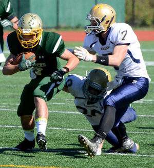
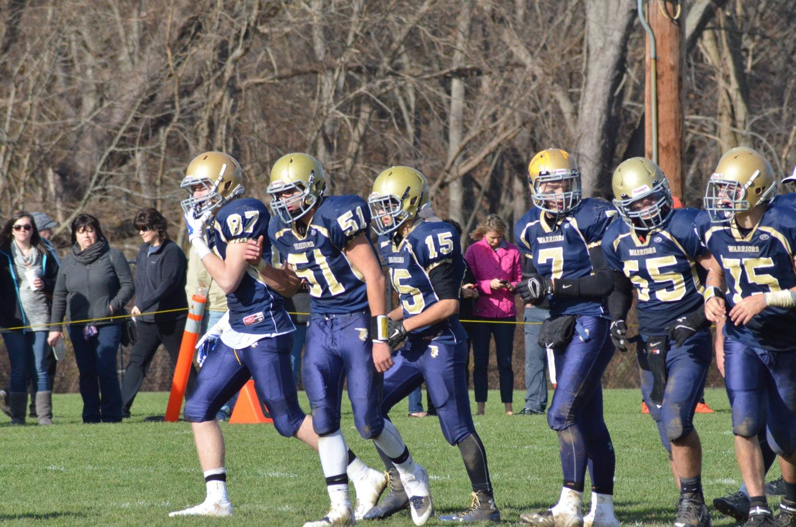

Quarterback/Safety
 Here is my page on football. I played as starting quarterback for my team from Sophomore Year to my Senior Year. I also played as starting Safety and lead the league in pass yards. Playing football was a passion for me since I was a little kid and I have always loved the game. I wanted to continue my football career in college but I broke my arm playing basketball and can no longer feel my thumb. I am still an avid fan of the game and try to watch every Patriots game I can. .
Links: